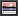

Material didáctico: Cúpula estrellada
Vamos a crear una cúpula celeste con todo el cúmulo de estrellas del hemisferio norte para pasear por su interior y mirar al punto que más nos interese en cada momento.
La escena es realmente muy sencilla. Para comenzar:
- Abrimos el archivo cameraFPS.blend y eliminamos el plano del suelo. No continuamos sin hacer Archivo/Guardar como para no perder el archivo original. Lo llamamos, por ejemplo, cupula_estrellada.blend.
- Desde el cuadro Propiedades ("N") nos aseguramos de que el Cursor 3D se encuentra en las coordenadas 0.0.0.
- Sacamos una esfera (Añadir/Malla/Esfera UV), la escalamos ("S") de acuerdo a la escala de CameraFPS.
- Le eliminamos los vértices que se indican en esta imagen.
- Le asignamos un Material
 simplemente pulsando Nuevo y le activamos Textura en caras.
simplemente pulsando Nuevo y le activamos Textura en caras.
Hay que mapear la cúpula desde el interior. Invertimos la dirección de las Normales porque una esfera las trae mirando hacia el exterior. Ya sabemos que para este tipo de ediciones es muy conveniente tenerlas a la vista (en Modo Edición  , en la botonera Visualización de malla del cuadro Propiedades "N"). Seleccionamos todos los vértices ("A") y usamos Malla/Normales/Voltear normales.
, en la botonera Visualización de malla del cuadro Propiedades "N"). Seleccionamos todos los vértices ("A") y usamos Malla/Normales/Voltear normales.
Para el mapeado necesitamos esta imagen.
Nos vamos al entorno de trabajo UV Editing. Allí:
- En el Editor UV  cargamos la imagen que ya tenemos en el disco duro.
- En el editor Vista 3D seleccionamos todas las caras ("A") de la cúpula y nos colocamos en el punto de vista en planta pero desde abajo ("Control_NumPad 7")
- También en el editor Vista 3D ordenamos Malla/Desplegar UV/Proyectar desde vista (Límites). La opción que incluye Límites es interesante cuando la imagen está correctamente proporcionada, como es este caso.
De vuelta al entorno de trabajo Default solo nos queda:
- Desde el cuadro Propiedades ("N") asegurarnos de que el Cursor 3D se encuentra en las coordenadas 0.0.0.
- Añadir un plano (Añadir/Malla/Plano) ya escalarlo ("S"). Nos aseguramos de que la Normal apunta hacia arriba, le asignamos un Material y le activamos Textura en caras.
- Descender la cúpula para que quede apoyada en el plano.
Algunos consejos
- Al menos una de las lámparas debe estar dentro de la cúpula aunque para este paseo virtual tan sencillo lo mejor es dejar sólo una y calcular una buena Energía para ella.
- El material de la cúpula es mejor que tenga una Intensidad: 0.000 para Especular. No tiene sentido que se genere una sensación volumétrica de ese tipo en el interior.
- Le aplicamos un sombreado Suave a la cúpula. No es necesario aplicar modificador Subdivisión.
No olvidaremos poner un sombreado Textura. Este es el aspecto en la simulación ("P").
Nada espectacular al tratarse de una imagen fija; el verdadero potencial está en pasear y mirar por el interior de la cúpula.